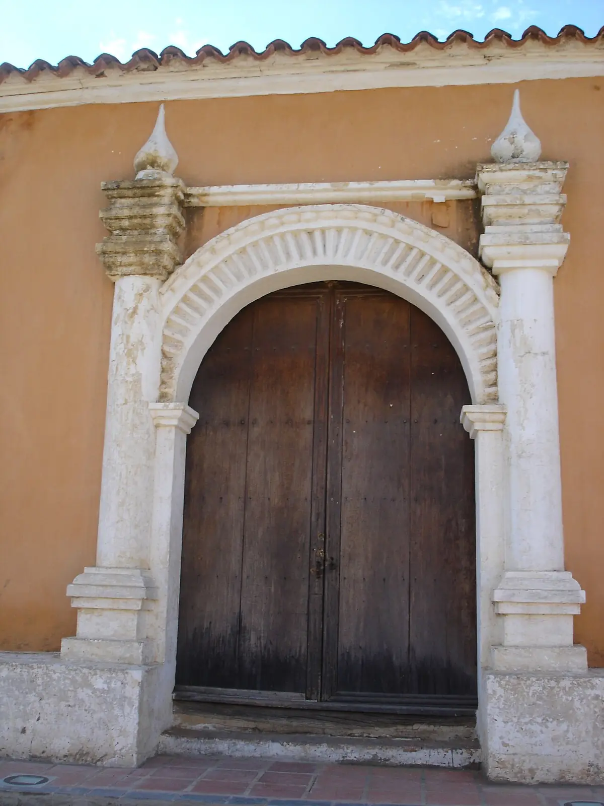
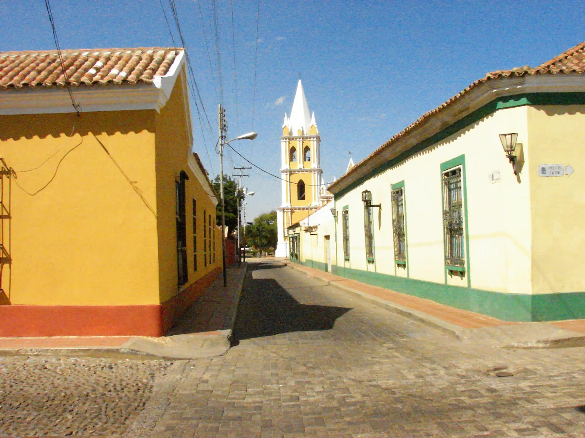
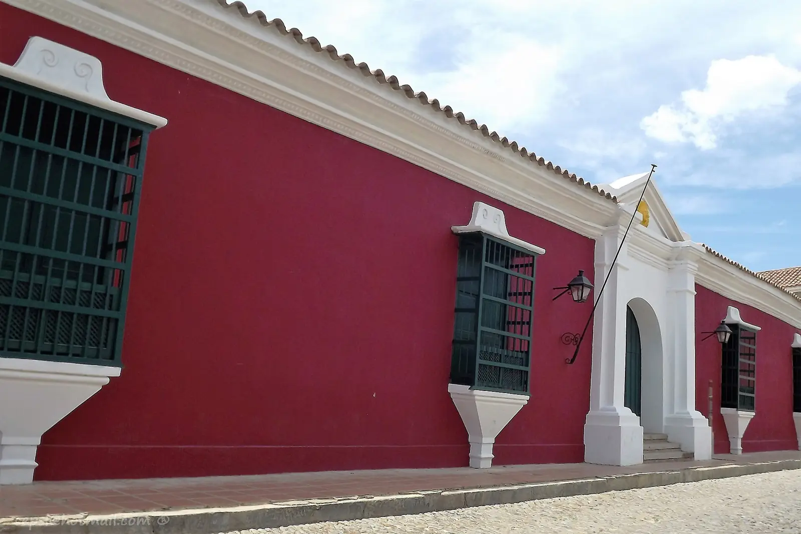
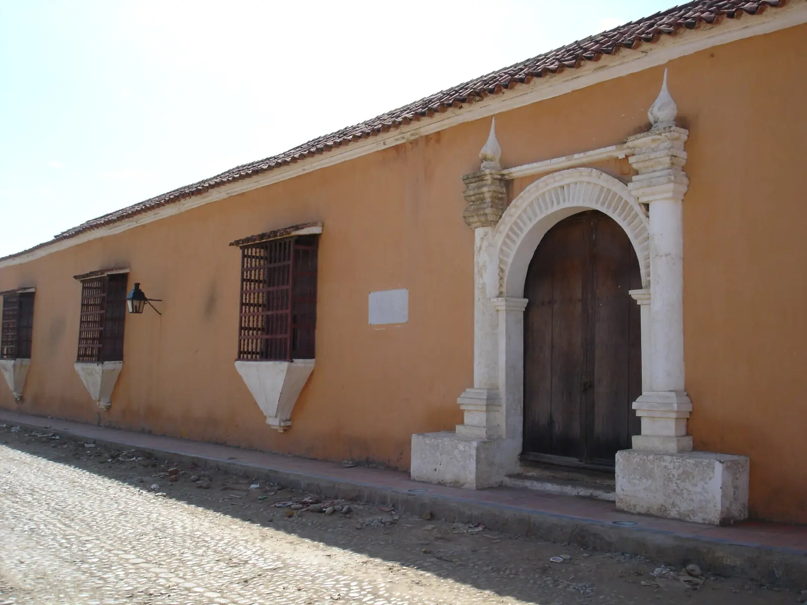
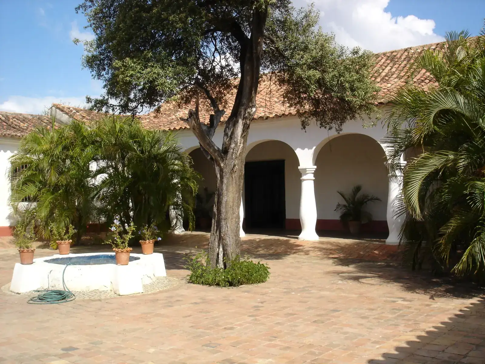
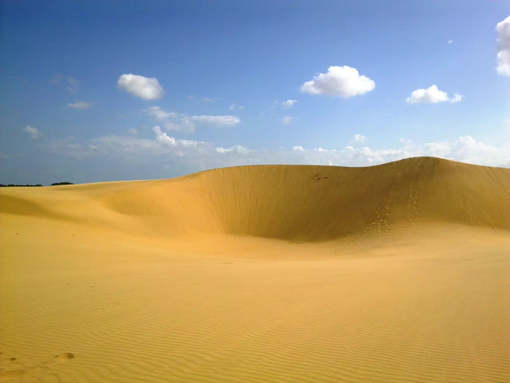

Coro se camina desde aquí
Posada familiar en la calle San Juan Bosco, en el centro de Coro, a pocas cuadras de la zona colonial.
Reservar por WhatsApp



En el centro
A pocas cuadras de la zona colonial: sale por la puerta y sigue caminando.
Wifi
Para avisar que llegó bien o adelantar algo de trabajo.
Se aceptan mascotas
Su compañero también viaja. Pregunte las condiciones y tráigalo.

Aquí lo atiende la familia
Tierra Latina es una posada familiar y se nota en el trato: aquí atienden con cariño. Y como está a pocas cuadras de la zona colonial, el paseo empieza en la puerta.
- Atención de la propia familia
- Wifi para los huéspedes
- Agua potable para los huéspedes
- Mascotas bienvenidas
- Se cobra a tasa BCV

Cuatro salidas desde la puerta
- Zona colonialA pocas cuadras, a pie
- Médanos de CoroUnos 10 minutos en carro
- La VelaUnos 12 km, 20 minutos en carro
- Península de ParaguanáUnos 90 km hasta Punto Fijo, 1 h 15 min en carro
Su llave ya casi está lista
Escoja habitación, fecha y cuántos vienen. El mensaje de reserva se escribe solo y nos llega por WhatsApp.
Tierra Latina
Matrimonial
2 noches · 2 personas
Sin mascota
$50 de ejemplo